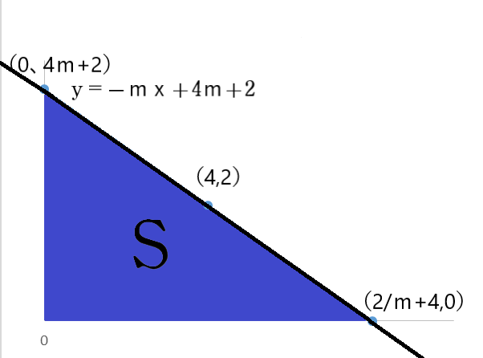
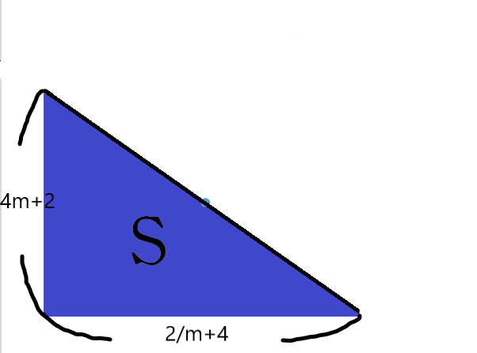
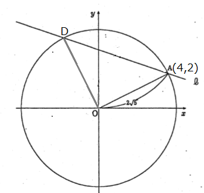

<html></html>
<head>
<meta charset="UTF-8">
<link rel="stylesheet" href="index.css">
</head>
<title>平成30年度青森県教員採用試験別解について</title>
<!-- Global site tag (gtag.js) - Google Analytics -->
<script async src="https://www.googletagmanager.com/gtag/js?id=UA-135083881-1"></script>
<script>
  window.dataLayer = window.dataLayer || [];
  function gtag(){dataLayer.push(arguments);}
  gtag('js', new Date());

  gtag('config', 'UA-135083881-1');
</script>

<script type="text/javascript" async
  src="https://cdnjs.cloudflare.com/ajax/libs/mathjax/2.7.1/MathJax.js?config=TeX-AMS_CHTML">
</script>
<style type="text/css">
div2{
  position:relative;
  text-align: center;
  top:  100px;
  font-size:x-large;
}
<div id="menu">
<ul>
<li><a href="#">ホームページ</a></li>
<li><a href="#">リスト</a></li>
<li><a href="#">日記</a></li>
<li><a href="#">掲示板</a></li>
</ul>
</div>
</style>

<body>
<h1><center>平成30年度青森県教員採用試験解答解説</center></h1>
<style>
h1{
color: #364e96;/*文字色*/
padding: 0.5em 0;/*上下の余白*/
border-top: solid 3px #364e96;/*上線*/
border-bottom: solid 3px #364e96;/*下線*/
}</style>
<div class="nav">
<ul class="nl clearFix">
<li><a href="index.html">大問1</a></li>
<li><a href="index2.html">大問2</a></li>
<li><a href="index3.html">大問3</a></li>
<li><a href="index4.html">大問4</a></li>
<li class="active"><a href="index5.html">大問5</a></li>
<li><a href="index6.html">大問6</a></li>
</ul>
</div>
<h2>5.座標平面上に点（4.2）を通るとき傾き\(-ｍ（ただしｍ＞0）\)の直線\(ℓ\)があり,
  直線\(ℓ\)が\(ｘ\)軸,\(ｙ\)軸と交わる点をそれぞれB,Cとし原点をOとする。次の(1)～(4)に答えなさい。</h2>
<br>
  (1)直線\(ℓ\)の方程式を\(ｍ\)を用いて表しなさい。<br>
  <center>
  \begin{align*}
  y&=-mx+b \tag{1}\\
      \end{align*}
    \begin{align*}
  ※点A（4,2）を通るので直線ℓに代入\tag{2}\\
    \end{align*}
      \begin{align*}
  2&=-4m+b \tag{3}\\
  4m+2&=b \tag{4}\\
y&=-mx+4m+2 \tag{5}\\
  \end{align*}
  \begin{align*}
   \underline{\large∴y=-mx+4m+2 }
   \end{align*}
</center>
  (2)点\(B,C\)の座標を\(ｍ\)を用いて表しなさい。<br>
    <center>
      <b>
  <font color="red">※座標\(B\)は直線\(ℓ\)と\(ｘ\)軸との交点なので\(ｙ\)の値は\(0\)である。</font><br>
  <font color="red">※座標\(C\)は直線\(ℓ\)と\(ｙ\)軸との交点なので\(ｘ\)の値は\(0\)である。</font><br>
</b>
  </center><br>
  (1)より,<br>
    \begin{align*}
  y&=-mx+4m+2 \tag{6}\\
  0&=-mx+4m+2 \tag{7}\\
  x&=4+\frac{2}{m}　　　　　　   \underline{\large∴座標B
    \left(
  4+\frac{2}{m},0
   \right)}
  \\
  y&=-m*0+4m+2 \tag{8}\\
  y&=4m+2 　　　　　　   \underline{\large∴座標C
    \left(
   0,4m+2
   \right)}\\
    \end{align*}
        <center></center>
  (3)△OBCの面積の最小値およびその時のｍの値を求めなさい。<br>
        <center></center>
        <br>
          <center>  <font color="red"><b>※△OBCの面積をｍを用いた式で表してみる。</b></font></center>
  \begin{align*}
min&=\frac{1}{2}
\left(
4+\frac{2}{m}
\right)
(4m+2)\tag{9}\\
&=\frac{1}{2}
\left(
16m+16+\frac{4}{m}
\right)\tag{10}\\
&=8m+8+\frac{2}{m}\tag{11}\\
\end{align*}
    <center>
一次関数の微分（最小値）<br>
</center>
\begin{align*}
S&＝8m+8+\frac{2}{m}\tag{12}\\
&=8+\frac{2}{m^2}=0\tag{13}\\
\frac{2}{m^2}&=8\tag{14}\\
m &=\frac{1}{2}\tag{15}\\
S
\left(
\frac{1}{2}
\right)&=16
\left(
\frac{1}{2}+\frac{1}{2}
\right)^2\tag{16}\\
&=16\tag{17}\\
\end{align*}
\begin{align*}
 \underline{\large∴以上より最小値16
   \left(
m=\frac{1}{2}
   \right)}
    \end{align*}
(4)原点\(O\)を中心とし点\(A\)を通る円が直線\(ℓ\)と\(2\)点で交わり,
その\(2\)つの交点を結ぶ線分の長さが\(2\sqrt{10}\)になるときの\(ｍ\)の値を求めなさい。<br>
        <center></center>
        解1
                <font color="#ff0000">
                  <div style="padding: 10px; margin-bottom: 10px; border: 5px double #333333;">
  \begin{align*}
          x’＝x\cosθ-y\cosθ\\
          y’＝x\cosθ+y\cosθ\\
          \begin{pmatrix}
          x' \\
          y'
          \end{pmatrix}=
\begin{pmatrix}
\cosθ-\sinθ \\
\sinθ+\cosθ
\end{pmatrix}
\begin{pmatrix}
x \\
y
\end{pmatrix}
              \end{align*}
              </div>
                <font color="black">
\(90\)度回転をする。
\begin{align*}
  \begin{pmatrix}
  \large \cos\frac{π}{2} & \large -\sin\frac{π}{2} \\
  \large  \sin\frac{π}{2} & \large \cos\frac{π}{2}
    \end{pmatrix}
    \begin{pmatrix}
    \large 4 \\
  \large  2
    \end{pmatrix}&=
    \begin{pmatrix}
    0 & -1\\
    1 & 0
      \end{pmatrix}
      \begin{pmatrix}
      4 \\
      2
      \tag{18}
      \end{pmatrix}\\
      &=
      \begin{pmatrix}
      -2\\
      4
      \tag{19}
      \end{pmatrix}\\
D=(-2,4)\\
傾き-mより、-\frac{2}{6}&=-\frac{1}{3}\tag{20}\\
\underline{\large∴m=\frac{1}{3}}
\end{align*}
  解2
  \begin{eqnarray}
    \left\{
      \begin{array}{l}
    \large  x^2+y^2=20……① \\
      \large  (x-4)^2+(y-2)^2=40……②
      \end{array}
    \right.
  \end{eqnarray}
  <center>
②を展開する
  \begin{align*}
  x^2-2x+16+y^2-4y+4&=40\tag{21}\\
  -8x-4y+20+20&=40\tag{22}\\
  2x+y&=0 ………②'\tag{23}\\
  ②'→y&=-2x ………②"\\
  ①より \\
   x^2+y^2&=20……①\tag{24} \\
   ②"より
    x^2+(-2x)^2&=20\tag{25} \\
    x^2+4x^2&=20\tag{26} \\
    5x^2&=20\tag{27} \\
    x^2&=4\tag{28} \\
    x&=±2…………③\tag{29} \\
    ③を②"に代入\\
    y&=-2x\tag{30} \\
    &=∓4
    つまり \underline{\large∴(2,4)(2,-4)}\\
    i) (2,4)(4,2)を結ぶ直線の傾きは正\\
    　　\underline{∴m < 0 ゆえに×}\\
    ii) (-2,4)と(4,2)を結ぶ直線の傾き\\
    -m&=\frac{2-4}{4-(-2)}\tag{31}\\
    &=\frac{-2}{6}=-\frac{1}{3}\tag{32}\\
    　　　　　\underline{\large∴m=\frac{1}{3}}\\
  \end{align*}
</center>
</body>
<p></p>
<br>
